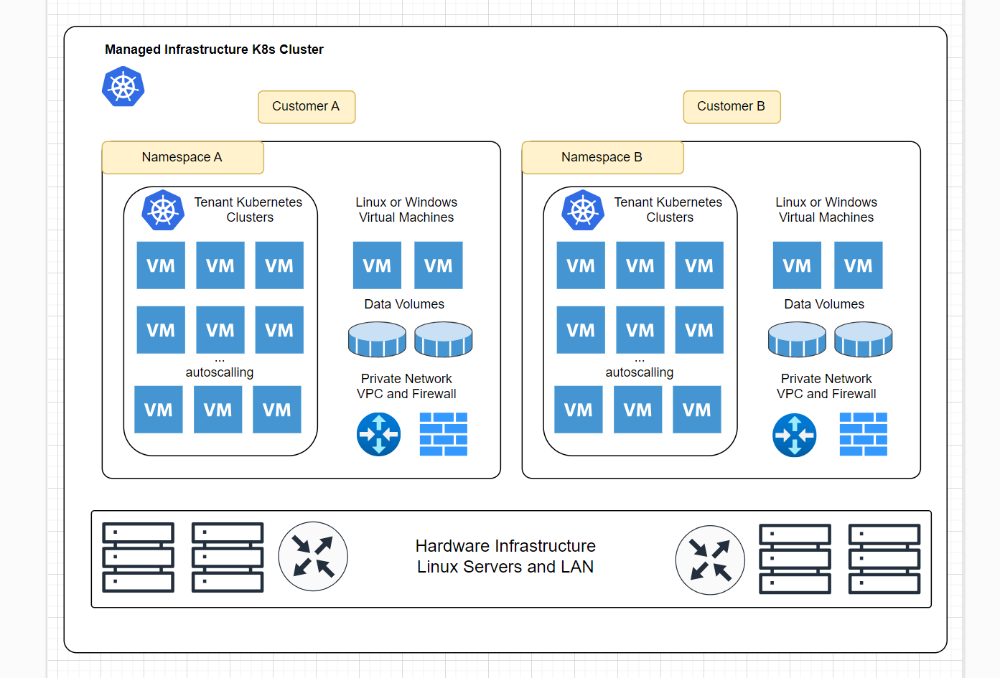

What Is Kube-DC? ¶
Kube-DC is an advanced, enterprise-grade platform that transforms Kubernetes into a comprehensive Data Center solution supporting both virtual machines and containerized workloads. It provides organizations with a unified management interface for all their infrastructure needs, from multi-tenancy and virtualization to networking and billing.
Overview ¶
Kube-DC bridges the gap between traditional virtualization and modern container orchestration, allowing teams to run both legacy workloads and cloud-native applications on the same platform. By leveraging Kubernetes as the foundation, Kube-DC inherits its robust ecosystem while extending functionality to support enterprise requirements.

Key Features at a Glance ¶
Kube-DC offers a comprehensive set of features designed for modern data center operations:
- Multi-Tenancy - Host multiple organizations with isolated environments and custom SSO integration
- Unified Workload Management - Run both VMs and containers on the same platform
- Advanced Networking - VPC per project, VLAN support, and software-defined networking
- Enterprise Virtualization - KubeVirt integration with GPU passthrough and live migration
- Infrastructure as Code - Kubernetes-native APIs with support for Terraform, Ansible, and more
- Integrated Billing - Track and allocate costs for all resources
- Managed Services Platform - Deploy databases, storage, and AI/ML infrastructure
For detailed information about each feature, including capabilities and use cases, visit the Core Features page.
Why Choose Kube-DC? ¶
For Enterprise IT ¶
- Run legacy VMs alongside modern containers
- Implement chargeback models for departmental resource usage
- Provide self-service infrastructure while maintaining governance
- Reduce operational costs by consolidating virtualization and container platforms
For Service Providers ¶
- Offer multi-tenant infrastructure with complete isolation
- Provide value-added services beyond basic IaaS
- Implement flexible billing based on actual resource usage
- Support diverse customer workloads on a single platform
For DevOps Teams ¶
- Unify VM and container management workflows
- Implement infrastructure as code for all resources
- Integrate with existing CI/CD pipelines
- Enable developer self-service while maintaining control
Getting Started ¶
Ready to explore Kube-DC? Check out our Quick Start guides to begin your journey.
For a deeper understanding of the underlying architecture and concepts, visit the Architecture & Concepts section.
Community and Support ¶
Kube-DC is built with a focus on community collaboration. Visit our Community & Support page to learn how to get involved, report issues, or seek assistance.